/math-0effb5dfe043214d3b87ff3ca0b1e4d4.png "y_{ij,k}=\mu +\alpha _i+\beta _j+\gamma _{ij}+\varepsilon _{ij,k}")
Es sei
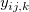
die k-te Beobachtung auf Stufe I des Faktors A und Stufe j des Faktors B. Dann kann das Modell der zweifachen ANOVA wie folgt geschrieben werden:
wobei /math-74b8eddf4b37de80c7c8eed1b64e46fc.png "\mu \,\!") der Mittelwert der gesamten Antwortdaten ist,
der Mittelwert der gesamten Antwortdaten ist, /math-d015b015788a3872acceec61ded52bfb.png "\alpha _i\,\!") ist die Abweichung bei Niveau l des Faktors A;
ist die Abweichung bei Niveau l des Faktors A;
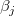
ist die Abweichung bei Niveau j des Faktors B,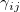
ist der Wechselwirkungsterm zwischen zwei Faktoren und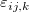
ist der Fehlerterm. Anschließend wird die Stichprobenvariation in drei Teile geteilt, so dass wir drei Hypothesentests durchführen können:Für Faktor A ist die Nullhypothese, dass die Mittelwerte der r verschiedenen Populationen gleich sind. Die Alternativhypothese lautet, dass sich mindestens ein Mittelwert einer Population von den anderen Mittelwerten unterscheidet:
/math-c33acaa27b66cec3e5a477ef1a4ec7ec.png "H_{01}:\alpha _1=\alpha _2=\ldots =\alpha _r=0")
/math-1bcb49c656d9c9add5863d0330032e26.png "H_{A1}:\alpha _p\neq \alpha _q") , für einige p und q, 1 ≤ p, q ≥ r;
, für einige p und q, 1 ≤ p, q ≥ r;
Für Faktor B ist die Nullhypothese, dass die Mittelwerte der s verschiedenen Populationen gleich sind. Die Alternativhypothese lautet, dass sich mindestens ein Mittelwert einer Population von den anderen Mittelwerten unterscheidet:
/math-b0c76e650b839f11332fb55bc4916f4a.png "H_{02}:\beta _1=\beta _2=\ldots =\beta _s=0") ;
;
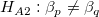
, für einige p und q, 1 ≤ p, q ≥ s;Für den Wechselwirkungsterm lautet die Nullhypothese, dass keine Wechselwirkung zwischen den beiden Faktoren besteht:
/math-e7658574652ff84922c7e45311aa9711.png "H_{03}:\gamma _1=\gamma _2=\ldots =\gamma _{rs}=0") ;
;
/math-caba9da65b46245805574ee743414b93.png "H_{A3}:\gamma _p\neq \gamma _q") , für einige p und q, 1 ≤ p, q ≥ rs;
, für einige p und q, 1 ≤ p, q ≥ rs;
Um diese Hypothesen zu testen, teilt man anschließend die Varianz der gesamten Stichprobe in vier Teile und schätzt sie durch die Stichprobenvariation:
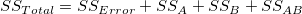
wobei
/math-47e7f804f075b9c157584ec06cce79cd.png "SS_{Total}=\sum_{i=1}^r\sum_{j=1}^s\sum_{k=1}^t(y_{ij,k}-\bar y)^2")
/math-df8189819caf3b152811459af23977f2.png "SS_{Error}=\sum_{i=1}^r\sum_{j=1}^s\sum_{k=1}^t(y_{ij,k}-\bar y_{ijm})^2")
/math-af748babfd23e3bfd39704d86135daa5.png "SS_A=st\sum_{i=1}^r(\bar y_{imm}-\bar y)^2")
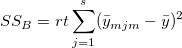
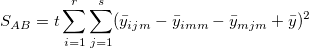
und wir haben
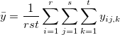
/math-8c782727576bb980e6cef0ccfd682cdf.png "\bar y_{ij}=\frac 1t\sum_{k=1}^ty_{ij,k}")
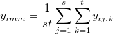
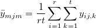
/math-100f5db42fc55631c7b4e798218f6a8f.png "SS_{Total}") ist die Gesamtsumme der Quadrate,
ist die Gesamtsumme der Quadrate,
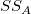
stellt die Variabilität der durchschnittlichen Differenzen von Faktor A dar,/math-8abe5e40ad8ae7fd4ed12d2d27a1a7dd.png "SS_B") stellt die Variabilität der durchschnittlichen Differenzen von Faktor B dar,
stellt die Variabilität der durchschnittlichen Differenzen von Faktor B dar, 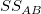
stellt die Variabilität der Wechselwirkung dar und/math-349fb0475e9b16a6353bbc1aae235e6a.png "SS_{Error}") stellt die Variabilität aller einzelnen Stichproben dar. Anschließend kann der F-Test verwendet werden, um die Signifikanz der Varianz zwischen ihnen zu testen:
stellt die Variabilität aller einzelnen Stichproben dar. Anschließend kann der F-Test verwendet werden, um die Signifikanz der Varianz zwischen ihnen zu testen:
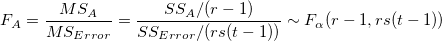
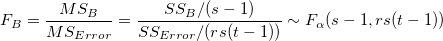
/math-57af428ccc9c055f5a80fdc87089b1c2.png "F_{AB}=\frac{MS_{AB}}{MS_{Error}}=\frac{SS_{AB}/((r-1)(s-1))}{SS_{Error}/(rs(t-1))}\sim F_\alpha ((r-1)(s-1),rs(t-1))")
Bei einem gegebenen Signifikanzniveau /math-7b7f9dbfea05c83784f8b85149852f08.png "\alpha") können wir die Nullhypothesen verwerfen, falls die F-Statistik den kritischen Wert
können wir die Nullhypothesen verwerfen, falls die F-Statistik den kritischen Wert
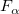
übersteigt. Das Gleiche gilt, falls der zugehörige p-Wert der F-Statistik kleiner ist als das Signifikanzniveau. /math-e65765bedcabe42c66ec93228769e82a.png "H_0") wird verworfen.
wird verworfen.
Die Berechnung der zweifachen ANOVA-Tabelle wird folgendermaßen zusammengefasst:
| Quelle der Variation | Freiheitsgrade (DF) | Summe der Quadrate (SS) | Mittel der Quadrate (MS) | F-Wert | Wahrsch. > F |
|---|---|---|---|---|---|
| Faktor A | r - 1 | 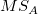 |
/ /math-ff8dc369a4b279c7e064cb1ef6fc4ba1.png "MS_{Error}") |
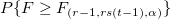 |
|
| Faktor B | s - 1 | |
/math-666cadb9e58dc0e560e052a20e3a510f.png "MS_B") |
/ |
/math-b9560f30879a8b17bbee7eebd41b9efa.png "P\{F\geq F_{(s-1,rs(t-1),\alpha )}\}") |
| Wechselwirkung | (r- 1) (s - 1) | /math-bcd1cd8741b39cdd8c3e290f145ae5a1.png "MS_{AB}") |
/ |
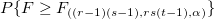 |
|
| Fehler | rs (t - 1) | |
|
||
| Gesamt | rst - 1 | |
Die Zweifache ANOVA in Origin benutzt einige der NAG-Funktionen. Die NAG-Funktion nag_dummy_vars (g04eac) wird verwendet, um die nötigen Designmatrizen zu erzeugen und die NAG-Funktion nag_regsn_mult_linear (g02dac) berechnet die linearen Regressionen der Designmatrizen. Diese Ergebnisse der linearen Regression werden dann verwendet, um die ANOVA-Tabelle zu bilden. Beachten Sie bitte die NAG-Dokumentation für weitere Hintergrundinformationen.
In der Varianzanalyse wird angenommen, dass verschiedene Stichproben gleiche Varianzen haben. Dies wird gewöhnlich Homogenität der Varianzen genannt. Der Levene-Test und der Brown-Forsythe-Test können zum Bestätigen der Annahme verwendet werden. Angenommen wir haben k Stichproben der Antwortdaten, wobei /math-53969de94b3708187e040cc38293f661.png "y_{ij}\,\!") den Wert der i-ten Beobachtung (i = 1, 2, ...
den Wert der i-ten Beobachtung (i = 1, 2, .../math-4aa861124eff57dd7988faa6753e8b7e.png "n_j") ) auf der j-ten Faktorstufe (j = 1, 2, ..., k) darstellt. Die Hypothesen der beiden Tests (Levene und Brown-Forsythe) können wie folgt ausgedrückt werden:
) auf der j-ten Faktorstufe (j = 1, 2, ..., k) darstellt. Die Hypothesen der beiden Tests (Levene und Brown-Forsythe) können wie folgt ausgedrückt werden:
: /math-6ae18486367863bbc938e896756f8df8.png "\sigma^2 _1=\sigma^2 _2=\cdots =\sigma^2 _k")
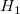
:/math-2b5c2cc59d7a827f54617e61fb32f2d9.png "\sigma^2 _p\neq \sigma^2 _q") , für mindestens ein Paar (p, q),
, für mindestens ein Paar (p, q), /math-f3befe30a4a0d18509558e6012408028.png "1\leq p,q\leq k")
Definiert
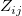
als die folgenden drei Definitionen bezüglich verschiedener Tests,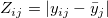
/math-ca90d368003ebe629f44501f0e71c07a.png "Z_{ij}^2=(y_{ij}-\bar y_j)^2")
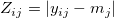
Wenn hält, dann folgt die Teststatistik
/math-9550c1c345a48df5bdeda1954598b3a4.png "F=\frac{\sum_{j=1}^kn_j(\bar Z_j-\bar Z)^2/(k-1)}{\sum_{j=1}^k\sum_{i=1}^{n_1}(Z_{ij}-\bar Z_j)^2/(n-k)}")
(nahezu) einer F-Verteilung
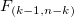
, wobei/math-68dd52e4750d73c982c39f0a3a5bc7b2.png "\overline{Z_j}") und
und /math-a79056b6644e25416e91e8b496e5d378.png "\overline{Z}") der Gruppenmittelwert bzw. der Gesamtmittelwert des ist.
der Gruppenmittelwert bzw. der Gesamtmittelwert des ist.
Wenn ein Experiment der zweifachen ANOVA festgestellt hat, dass mindestens ein Faktorstufenmittelwert statistisch von den Mittelwerten der übrigen Faktorstufen abweicht, dann vergleicht ein Mittelwertevergleich nachfolgend alle möglichen Paare von Faktorstufenmittelwerten dieses Faktors, um festzustellen, welche(r) Mittelwert (oder Mittelwerte) signifikant abweicht (abweichen). Es gibt verschiedene Methoden des Mittelwertevergleichs in Origin. Wir verwenden die NAG-Funktion nag_anova_confid_interval (g04dbc), um Mittelwertevergleiche durchzuführen.
Zwei Typen des mehrfachen Mittelwertevergleichs:
Ein-Schritt-Methode Sie erstellt simultane Konfidenzintervalle, um zu zeigen, wie sich die Mittelwerte unterscheiden. Dazu gehören die Methoden nach Tukey-Kramer, Bonferroni, Dunn-Sidak, Fisher’s LSD, Scheffé und Dunnett.
Schrittweise Methode Diese Methode führt nacheinander die Hypothesentests aus. Dazu gehören der Holm-Bonferroni- und der Holm-Sidak-Test.
Die Analyse der Trennschärfe berechnet die Ist-Trennschärfe für die Stichprobendaten als auch die hypothetische Trennschärfe, falls zusätzliche Stichprobenumfänge angegeben sind.
Die Trennschärfe einer zweifachen Varianzanalyse ist ein Maß für deren Empfindlichkeit. Die Trennschärfe ist die Wahrscheinlichkeit, dass die ANOVA Unterschiede in den Mittelwerten der Grundgesamtheiten aufdeckt, wenn tatsächliche Unterschiede existieren. Drückt man dies mit den Begriffen der Null- und Alternativhypothese aus, so ist die Trennschärfe die Wahrscheinlichkeit dafür, dass die Teststatistik F stark genug ist, um die Nullhypothese zu verwerfen, wenn sie tatsächlich verworfen werden sollte (d.h. die Nullhypothese ist nicht wahr).
Das Dialogfeld Zweifache ANOVA in Origin kann Trennschärfen für Faktor A und Faktor B berechnen. Wenn das Kontrollkästchen Wechselwirkungen aktiviert wurde, kann Origin auch die Trennschärfe für die Wechselwirkung A*B berechnen.
Die Trennschärfe wird durch folgende Gleichung definiert:
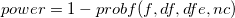
wobei f die Abweichung von der nicht zentrierten F-Verteilung mit df und dfe Freiheitsgraden und nc = SS/MSE ist. SS ist die Summe der Quadrate der Quelle A, B oder A*B, MSE ist das Mittel der Quadrate des Fehlers, df ist der Freiheitsgrad des Zählers für die Quelle A, B oder A*B, dfe ist der Freiheitsgrad der Fehler. Alle Werte (SS, MSE, df und dfe) werden der ANOVA-Tabelle entnommen. Der Wert von probf( ) wird durch die NAG-Funktion nag_prob_non_central_f_dist (g01gdc) ermittelt. Beachten Sie bitte die NAG-Dokumentation für weitere Hintergrundinformationen.
Die obige Beschreibung ist eine kurze Übersicht über den Algorithmus der einfachen ANOVA. Weitere Informationen über die Einzelheiten der mathematischen Deduktion finden Sie im entsprechenden Teil des Anwenderhandbuchs und der NAG-Dokumentation.